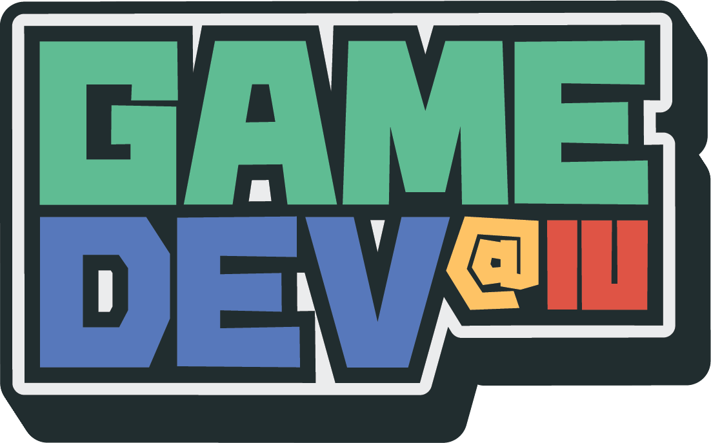
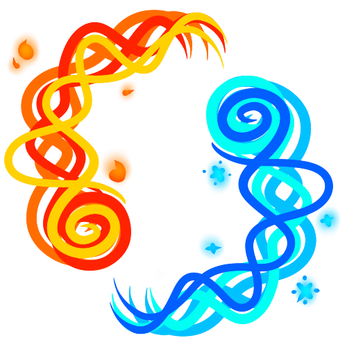

GD@IU

GD@IU, or Game Dev at Indiana University, is the on-campus game development club. I currently work as Officer of Public Relations, wherein I update weekly event schedules, website information,
and manage social media for club publicity and marketing. I work closely with the five different Special Interest Groups to plan and lead weekly workshops and events,
as well as conduct officer meetings to discuss future ideas, current problems, and possible solutions to these issues in order to facilitate a dedicated and passionate community
for local game developers. We host multiple events completely open to the public, spanning from monthly Game Jams to weekly activities such as portfolio reviews.
Stacking Puzzle Game
 A 3D puzzle game made in Unity as a final project for a game production class. The purpose of this project was mostly to practice puzzle design, and to familiarize myself
with the Unity game engine, importing textures and assets, and basic game programming practices. Completed within a week.
A 3D puzzle game made in Unity as a final project for a game production class. The purpose of this project was mostly to practice puzzle design, and to familiarize myself
with the Unity game engine, importing textures and assets, and basic game programming practices. Completed within a week.
Affinity
An arcade-style local multiplayer fighting game where players compete in fast-paced matches in a retro neon environment.
This was a class project for a game production class with a focus on team integration, rapid prototyping, and combat programming.
Ultimate project goal was to combine three individual prototypes created by each team member into one unified prototype,
in addition to becoming familiarized with AGILE and scrum workflows. Team size was 3, project was finished in one month.
My Role:
- Lead designer for core gameplay and combat mechanics such as power-ups and environmental interactions
- Collaborated with teammembers to piece together essential design pillars from 3 different prototypes into one new design
- Organized design log document with weekly scrum notes and design concerns
- Lead programmer, programmed combat, UI and menu mechanics
- Technical art support with polish elements in the form of particle effects and screen shaking
Click here to see the final prototype
 The Ripper
The Ripper